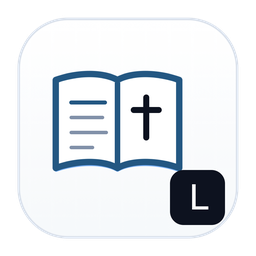

Bible Paste
iOS · macOSAutomatically detects scripture references in copied text and formats full passages using offline translation databases.
복사한 텍스트에서 성경 구절을 자동 감지하여 오프라인 데이터베이스를 통해 원하는 역본의 본문으로 즉시 변환합니다.
Privacy Policy
개인정보 처리방침
App Store